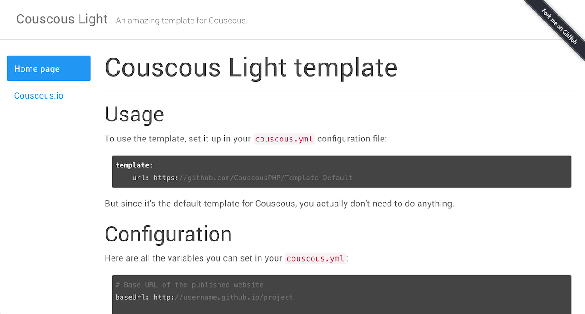

Couscous Light template

Usage
To use the template, set it up in your couscous.yml configuration file:
template:
url: https://github.com/CouscousPHP/Template-LightConfiguration
Here are all the variables you can set in your couscous.yml:
# Base URL of the published website
baseUrl: http://username.github.io/project
# Used to link to the GitHub project
github:
user: myself
repo: my-project
title: My project
subTitle: This is a great project.
# The left menu bar
menu:
items:
home:
text: Home page
# You can use relative urls
relativeUrl: doc/faq.html
foo:
text: Another link
# Or absolute urls
absoluteUrl: https://example.comNote that the menu items can also contain HTML:
home:
text: "<i class=\"fa fa-github\"></i> Home page"
relativeUrl: doc/faq.htmlMenu
To set the current menu item (i.e. highlighted menu item), set the currentMenu
key in the Markdown files:
---
currentMenu: home
---
# Welcome